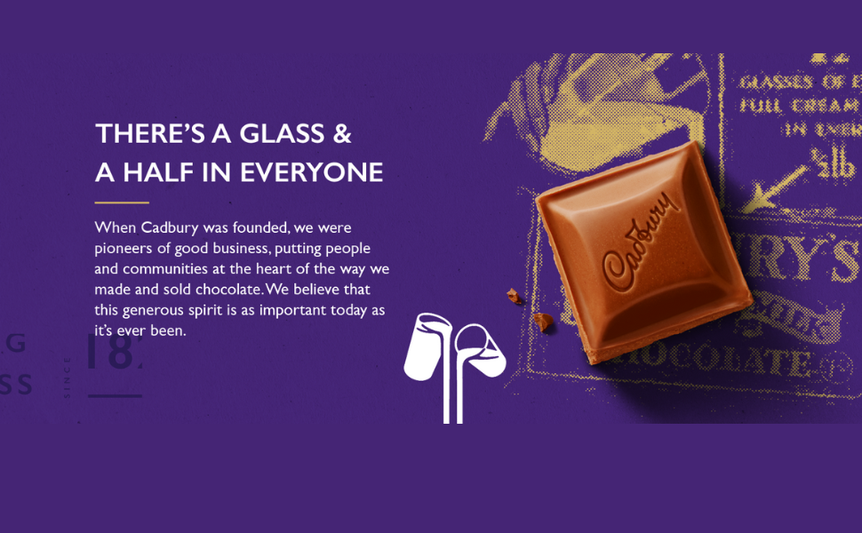
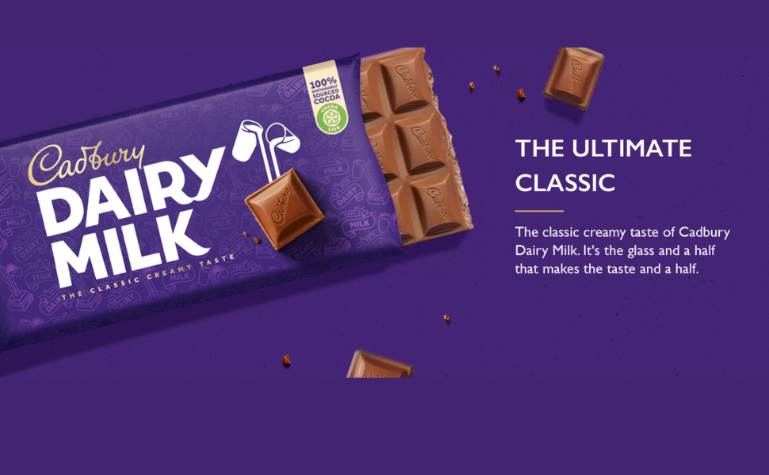
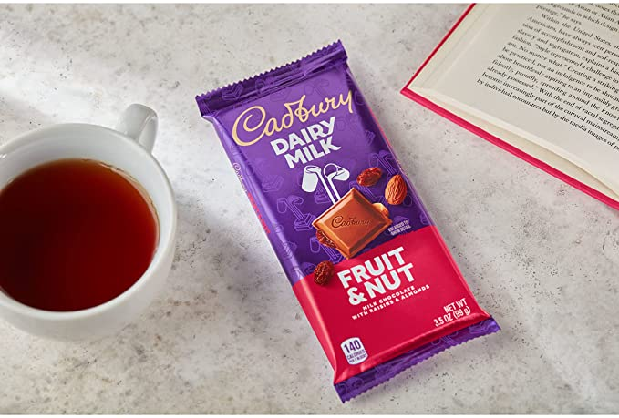

CADBURY DAIRY MILK Fruit & Nut Candy Bar

Description
-
Milk chocolate, raisins and chopped almonds. Enjoy the classic, creamy taste of Cadbury Dairy
Milk.
-
100% sustainably sourced cocoa. Cocoa Life is our sustainable cocoa sourcing program that does
good by encouraging responsible farming, and by helping fight deforestation and support cocoa
farming communities. Learn more at Cocoalife.org
- Milk chocolate, raisins and chopped almonds
- Enjoy the classic, creamy taste of Cadbury Dairy Milk
- 100% sustainably sourced cocoa
- Tastes best when shared with a loved one
- Cadbury - Making chocolate and spreading goodness since 1824
- For recipe ideas with Cadbury Dairy Milk visit snackworks.ca
- You may also like Cadbury Dairy Milk Hazelnut.


